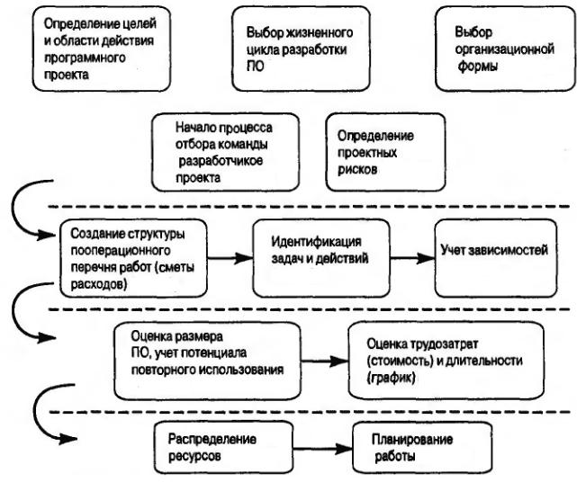
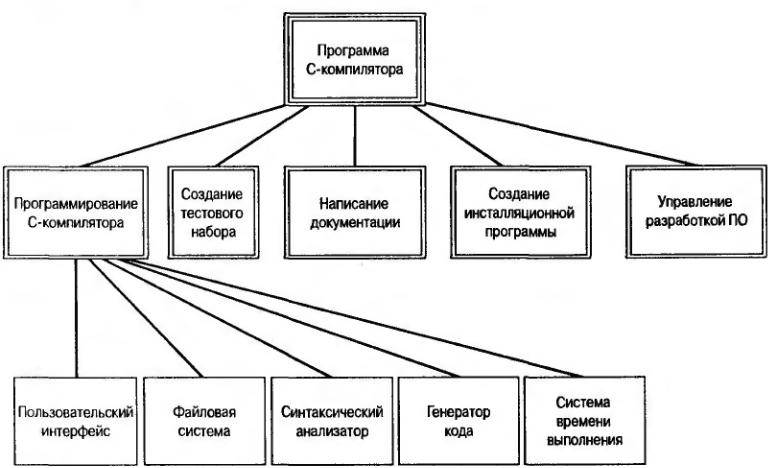
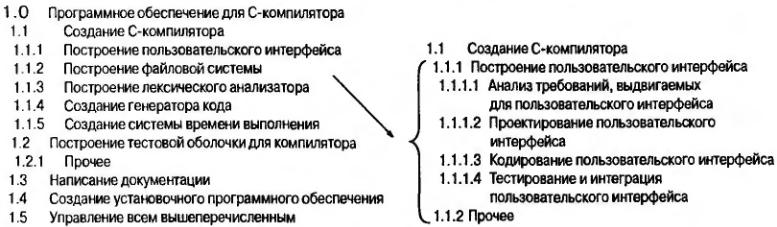
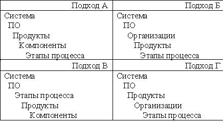
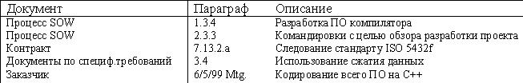
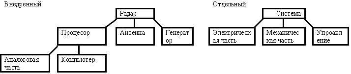
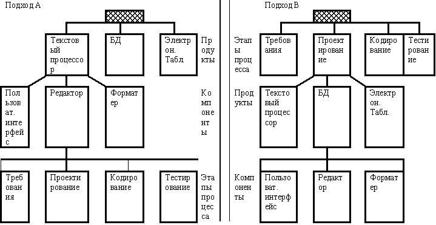
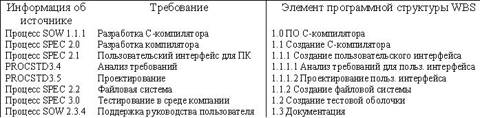
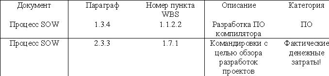

Пооперационный перечень работ (WBS - Work breakdown structure)
Введение
Структура пооперационного перечня работ (Work breakdown structure, WBS) является основой плана проекта, на его основе проектируются другие компоненты проекта.
Структура WBS представляет собой инструмент, применяемый для документирования всех рабочих операций, которые должны быть выполнены при разработке и поставке ПО надлежащим образом. Хотя иногда может показаться, что информация, поддерживаемая этой структурой, является избыточной по причине наличия других документов, создаваемых в ходе осуществления программного проекта (область применения работ, спецификация требований ПО, документы по разработке проекта и т.д.).
Однако это не так, поскольку структура WBS консолидирует информацию из различных источников, организуя ее с применением единого формата, удобного при планировании, оценивании и отслеживании.
Структура WBS образует своего рода каркас, на основе которого разрабатывается график выполнения проекта. Благодаря этому можно переходить от действий верхнего уровня в рамках проекта (действия типа сделать) через ряд упрощенных и сравнительно незначительных действий, предназначенных для создания поставляемых продуктов проекта, до тех пор, пока не будут выбраны легко управляемые действия. В результате выбора подобной модели действий каждый пользователь сможет разобраться во взаимосвязях между задачами и действиями, воспользовавшись простыми и "прозрачными" методами.
Структура WBS представляет собой иерархический перечень рабочих действий, необходимых для завершения проекта. В этот перечень включаются управленческие, административные, интегральные и программистские действия, с помощью которых:
- выполняется разработка ПО;
- происходит управление проектом;
- обеспечивается поддержка для всех действий, выполняемых в ходе осуществления проекта;
- выполняются любые другие действия, требуемые для достижения целей проекта и удовлетворения требований пользователей, например, создание документов, разработка учебных программ, инструментальных средств разработки, закупки, командировки и т.д.
Структура WBS представляет собой описание выполняемой работы, разбитой на отдельные ключевые компоненты вплоть до самого нижнего уровня.
Таким образом, при разбиении проекта на отдельные управляемые части размер каждого компонента может быть изменен, а также возможна оценка трудозатрат, понесенных на этапе разработки этого компонента. При разработке программных проектов подавляющая часть трудозатрат по разработке напрямую связана с размером и сложностью программного продукта.
На рис. 9.6 показано, каким образом реализуются этапы что и как при выполнении программного проекта. На этой схеме структура WBS, ориентированная на разрабатываемые продукты, идентифицирует действия на уровне применимости персоналом, обладающим необходимыми в данном случае навыками. Как только будет определено количество участников команды, а также составлен перечень требуемых навыков, оценки трудозатрат могут применяться наравне с составление графика с целью определения длительности выполнения проекта, а также момента достижения определенных этапов проекта.
Результирующий график выполнения проекта обычно отображается в виде диаграмм Ганта. В этот момент времени завершается этап планирования как, после чего могут начинаться работы по выполнению проекта. В процессе выполнения каждое действие из структуры WBS может отслеживаться в масштабе всего проекта.

Рисунок 9.6 - Действия по определению размеров и оценке ПО попадают в центральную область последовательности задач по планированию программных проектов.
Структура WBS, ориентированная на конечные продукты, отображает этапы процесса разработки продукта, детализованные на уровне его компонентов. Эта структура реализует управление планированием на этапах что и как, а также закладывает основы отслеживания рабочих действий, величины затрат и хода выполнения графика на этапе выполнение. При этом руководитель работ получает возможность взглянуть на происходящее с "глобальной точки зрения". Подобная структура отображает "содержание" работ, выполняемых в ходе осуществления проекта. Учитывая эти обстоятельства, можно заключить, что данный инструмент является весьма ценным в работе менеджеров проектов.
Ранее уже упоминалось о том, что тройные ограничения для проектов включают область действия, график и затраты. Эти ограничения напрямую связаны с размером ПО, сроком завершения работ и трудозатратами, связанными с распределением ресурсов. Изначально выполняется идентификация цели и области действия. Затем рассматриваются трудозатраты и рабочий график. Как упоминалось ранее, для выполнения бюджетных и детализированных оценок работы, а также для разработки реального графика требуется структура WBS, ориентированной на продукты. Потребность в ней особенно ощущается при выполнении следующих трех действий в рамках проекта.
Оценка затрат:
- обеспечение оценки выполняемых действий;
- обеспечение соответствия каждого элемента оценки рассматриваемому действию;
- "пересчет" затрат на производство отдельных элементов в итоговые суммы затрат на производство подэлементов, а также системы в целом.
Счета затрат:
- обеспечивают распределение работ и "зарядку" соответствующих центров затрат на основе специфических элементов структуры WBS;
- позволяют детализировать фактические затраты.
Выполнение графика:
- обеспечивается отслеживание завершенных действий;
- возможна оценка хода выполнения проекта.
Структура WBS может быть связана со счетами затрат проекта, позволяющих выполнять контроль, а также со сметой затрат организации, созданной с целью управления выполняемыми работами. Благодаря структуре WBS эти объекты могут отображаться наравне со специфическими элементами, включенными в рабочий график на завершающих этапах.
Структура пооперационного перечня работ может быть описана различными способами: в виде дерева (рис.9.7) и в виде списка (рис.9.8).

Рисунок 9.7 - Пример структуры пооперационного перечня работ, отображенной в виде дерева

Рисунок 9.8 - Пример структуры пооперационного перечня работ, представленной в виде списка с отступами
Обратите внимание на схему нумерации из рис. 9.8, применяемую для пометки элементов структуры WBS. Эта схема является весьма полезной и позволяет отличать такие обобщенные действия как разработку проекта, кодирование и тестирование от многих других программных компонентов. В рассматриваемом примере действие 1.1.1.3 применяется для разработки пользовательского интерфейса, а действие 1.4 применяется для создания сценария программы установки. Благодаря наличию подобных особенностей обеспечивается требуемая доля специфичности при пометке действий проекта.
Используемая в данном случае схема нумерации устраняет двусмысленность при сопоставлении меток действиям проекта. Большая часть программ, применяемых для составления графиков проектов, могут поддерживать автоматическую расстановку отступов и структуру WBS либо структурную нумерацию. Также обратите внимание на то, что подобная работа должна быть выполнена на различных уровнях структуры WBS.
Структура WBS может быть создана для двух наиболее общих представлений продукта.
- Представление продукта указывает иерархические взаимосвязи среди элементов продукта (подпрограммы, модули, подсистемы и т.д.). Однако не путайте эту структуру с материальной ведомостью.
- Представление проекта указывает на иерархические взаимосвязи среди рабочих действий (элементы процесса). Часто распределяется среди организационных линий.
Оба набора элементов и действий следует учитывать при вычислении размера и оценке создаваемого ПО.
Как правило, для каждого различного жизненного цикла существует уникальный пооперационный перечень работ, который может использоваться в самой организации. Даже если в большинстве жизненных циклов разработки ПО применяются многие общие действия, такие как декомпозиция системных требований, выполнение разработки архитектуры, создание тестовых данных и управление проектом, порядок выполнения этих действий для каждого жизненного цикла может быть совершенно различным. Некоторые действия могут пропускаться в определенных ситуациях, например, при разработке прототипов, либо в случае миниатюрных проектов. Во многих организациях создаются структуры WBS с целью сравнения предварительно определенных жизненных циклов для процессов и действий (на базе шаблона, определяемого с помощью стандарта IEEE 1074), которые являются типовыми для определенных видов проектов. К подобным проектам относится разработка новых системных Web-приложений, расширения возможностей существующих систем либо специализированные базы данных. Во многих случаях применяется классификация в соответствии с размером проекта: большой, средний либо малый.
Методы создания структуры WBS
Структура WBS может создаваться с применением самых различных методов, но, как правило, лучше всего ранжировать действия в соответствии с основными рабочими и поставляемыми продуктами, разработанными в соответствии с требованиями заказчиков. Здесь необходимо различать рабочие продукты (что-либо материальное, производимое в ходе выполнения проекта, например, техническое задание, документы:
- SOW (Statement of work) - рабочий план,
- SPMP (Software project management plan) - план управления программными проектами,
- SRS (Software requirements specification) - спецификация требований по разработке ПО,
- SDD (software design description) - описание разработки программного проекта, код, наборы тестов и т.д.), и поставляемые продукты (рабочие продукты, модули исполняемого кода, документация и т.д.). Обратите внимание на рис. 9.7, где иерархическое информационное "дерево" включает:
- компилятор;
- основные части компилятора;
- этапы проектирования основных составляющих частей компилятора.
Первый из перечисленных объектов представляет собой поставляемый продукт, второй - основные составляющие части рабочего продукта, применяемые поставляемыми продуктами, третий - действия, которые могут применяться при создании основных компонентов. Данная прогрессия демонстрирует, каким образом действия в разветвлениях структуры WBS соотносятся с поставляемыми продуктами. Организация структуры WBS вокруг поставляемых продуктов и выполняемых при их производстве действий способствует тому, что необязательная работа, не будет выполняться в ходе выполнения проекта.
Хотя организация структуры WBS вокруг рабочих и поставляемых продуктов является неплохим способом, позволяющим избежать планирования дополнительной работы в рамках проекта, возможен, также другой вариант. Иногда более удобным является сегментирование работы путем ее организации на высшем уровне, а не на уровне рабочих и поставляемых продуктов. При этом также оценивается степень контроля проекта при условии наличия организаций, которые ответственны за разработку компонентов заключительного рабочего продукта.
В результате расширяются возможности команды, и улучшается контроль над выполняемым программным проектом. Дополнительные варианты приводятся на рис. 9.9. Они могут применяться в качестве базисных элементов проекта. Могут также использоваться другие элементы, например, поставляемые продукты, навыки, виды ответственности либо хронология. В иллюстрируемых на рис. 9.9 методах предполагается, что имеет место декомпозиция на системном уровне, а рассмотрению подвергаются элементы ПО. В этом случае пооперационный перечень работ может включать аппаратное обеспечение, ПО, а также деловые процессы.

Рисунок 9.9 - Некоторые возможные варианты структуры пооперационного перечня работ
Структура WBS может создаваться в направлении "сверху-вниз" либо в направлении "снизу-вверх".
Подход "сверху-вниз" влечет за собой последовательную декомпозицию.
Подход "снизу-вверх" применяется метод "мозгового штурма" и диаграммы связности.
Обычно в начале осуществления проекта на этапах что и как применяется подход "сверху-вниз". Зачастую при определении структуры WBS используется представление в форме дерева, поскольку в этом случае количество уровней будет ограниченным. Это представление является весьма удобным при отображении документов, связанных с техническим заданием проекта. В этом случае менеджеру проекта значительно проще идентифицировать большие рабочие компоненты, которые будут выполняться в дальнейшем, а также определить приближенный порядок разброса оценок выполняемой работы (Order of magnitude, ROM). Подобные оценки обычно основываются на широко распространенном "правиле большого пальца", заключающемся, например, и экстраполяции, использующей сведения о предыдущих программных проектах либо о размерах (большой, средний, малый) и типе прогнозируемого жизненного цикла разработки ПО.
Подход "сверху-вниз" часто применяется в том случае, когда работа была выполнена преждевременно, а команда разработчиков проекта хорошо осознала этапы выполняемого проекта. При использовании этого подхода разработка начинается с самого верхнего элемента (обычно поставляемый программный продукт, например, "завершенное ПО С-комнилятора"). Затем производится дальнейшая разбивка, причем па каждом последующем уровне возрастает достигаемый уровень детализации. Разбиение продолжается до тех пор, пока фрагменты работы не смогут быть выполнены "одной единицей ресурса" за "относительно короткий период времени".
В качестве "одной единицы ресурса" может выступать один человек, одна секция, один отдел либо другой элемент организационной структуры, который может выполнять работу. "Относительно короткий период времени" может означать один день, неделю, две недели, месяц либо другую единицу времени, обладающую приемлемым уровнем детализации в масштабах области действия проекта, позволяющим производить измерения во время выполнения проекта. Как правило, в программных проектах происходит разбиение выполняемой работы до тех пор, пока она не будет выполняться одним человеком либо группой за период времени, равный одной либо двум неделям. При этом производится одна единица рабочего продукта.
В результате поддерживается равновесие, предотвращающее эффект "большого взрыва" при управлении поставляемыми продуктами.
Подход "снизу-вверх" идеально подходит при разработке проектов новых типов, когда команда разработчиков плохо ознакомлена с этапами, которые им предстоит реализовать на практике. Применение этого подхода на практике обычно означает использование методики "мозгового штурма" по отношению ко всему, что должно выполняться в рамках проекта. Затем происходит группировка действий с одинаковыми уровнями детализации (при этом выполняется приблизительная оценка объема выполняемой работы). Также выполняется группирование всех действий до тех пор, пока не будет достигнут элемент высшего уровня. Этот процесс именуется созданием диаграмм связности.
При использовании каждого из этих подходов следует избегать чрезмерной детализации, которая может привести к созданию чрезвычайно громоздких планов. Не планируйте слишком много деталей. Например, если на разработку определенного модуля кода отводится две недели, дальнейшее разбиение плана на детализированные этапы, включающие идентификацию элементов данных, создание диаграмм потока данных, а также обзор заказчиков являются излишними. В то же самое время менеджер проекта полагается на инженерное образование разработчиков проекта.
Распространенной ошибкой в этой ситуации является продуцирование чрезмерного количества деталей на начальных этапах планирования. Как только будет выполнено описание, достаточное для четкого инструктирования участников разработки, а также реализована приемлемая оценка общего объема трудозатрат, необходимо остановиться. Сначала нужно распределить (делегировать) действие, позднее потребуется завершить планирование.
Воспользуйтесь услугами команд и подгрупп для выполнения работы по частям.
Распределите работу таким образом, чтобы организационные единицы в целом несли ответственность за выполнение действий на нижнем уровне структуры WBS. Также во избежание затруднений в организации и управлении, попытайтесь ограничить глубину дерева либо списка с отступами таким образом, чтобы эти объекты были хоть в какой-то степени управляемыми. Слишком большое количество подуровней структуры приводит к путанице. Старайтесь придерживаться принципов максимальной простоты, оставляя при этом возможность выражения структуры и иерархии работы в рамках проекта.
Определение стадий проекта
Стадия - значимое событие проекта, обычно связанное с основным рабочим продуктом либо поставляемым продуктом.
Эти события служат своего рода "путевыми знаками" на пути к завершению проекта. Причем в состав каждого проекта должно входить достаточное количество стадий, равномерно распределенных в графике, благодаря чему может легко измеряться прогресс в направлении достижения конечной цели. Если количество стадий невелико, мы будем иметь дело с так называемым проектом "большого взрыва", когда никто толком не будет знать срок завершения проекта, для которого составлен график.
Однако слишком большое количество стадий может привести к чрезмерному замедлению темпов выполнения проекта. Стадии имеют нулевую длительность, поскольку просто отмечают момент времени, в который завершается некий важный этап проекта. Стадии могут определять завершение одного либо большего количества действий. Также они могут определяться для рабочего или поставляемого продукта или для определенной группы из указанных выше объектов. С целью индикации времени завершения лучше всего использовать определенные возможности языка, например, "готово" либо "завершено".
Для примера с С-компилятором на рис. 9.7 стадия для элемента 1.0 может иметь вид "разработка ПО С-компилятора завершена".
Фазы не эквиваленты стадиям, а представляют собой наборы взаимосвязанных действий по разработке продукта. Стадии могут применяться для отметки времени завершения фазы
Проектирование рабочих пакетов
В основном вся работа выполняется на нижнем уровне структуры WBS. Здесь находятся "листья", формирующие дерево, или действия, которым соответствуют наибольшие по величине отступы (при использовании списков с отступами). Этот уровень именуется рабочим пакетом, который, как правило, является результатом производства рабочего продукта. Все рабочие пакеты проекта отличаются друг от друга.
В пакете обычно описывается вся необходимая информация, необходимая для выполнения специалистом данного вида работы. На уровне программных проектов рабочие пакеты обычно соответствуют наименьшим идентифицируемым объектам либо модулям, которые создаются в рамках поставляемой системы.
Рабочий пакет может содержать следующую информацию:
- описание ожидаемого рабочего продукта-производимые элементы ПО;
- требования к персоналу - какого рода специалисты и в каком количестве требуются для выполнения данного действия;
- имена ответственных лиц- персональная ответственность за ход выполняемых работ;
- указанная в графике дата начала и завершения выполнения какого-либо действия;
- выделенный бюджет (деньги, часы либо другие единицы измерения) - оценка трудозатрат при выполнении действия;
- критерии приемки работы -уровень дефектов либо другой вид оценки достигаемого уровня качества.
Если персонал разработчиков проекта уже знаком с упомянутыми выше моментами, что является общепринятой практикой в организациях, где группа инженеров - программистов работают вместе изо дня в день, создание формального рабочего пакета вовсе не будет обязательным, поскольку каждый уже ознакомлен со всеми задачами, выполнение которых крайне необходимо для завершения действия.
Однако, если организовывается новая группа сотрудников, которые никогда не работали вместе ранее, потребуется больший уровень контроля. Усиленный контроль также требуется в случае отсутствия общепринятой практики создания предварительных схем программных проектов.
В этом случае регистрация информации о рабочих пакетах является весьма полезной, поскольку в этом случае назначение этих пакетов становится очевидным.
Регистрация подобной информации может происходить также в том случае, если рабочий пакет проекта определяет область действия работы в рамках целого подпроекта, который подвергается дальнейшему разбиению на большее количество действий, управляемых подобно проекту, но с приложением больших усилий. Подпроект от самостоятельного проекта отличается тем, что не существовать самостоятельно, вне контекста большего проекта. Поставляемый рабочий продукт подпроекта может представлять собой автономную часть ПО, используемую в контексте, лежащем вне области действия текущего проекта. Хорошим примером программного подпроекта является проект по созданию пользовательских программных утилит. В большинстве инструментов календарного планирования, обеспечивающих управление проектами, таких как Microsoft Project, помечать сведения о каждом выполняемом действии.
Создание структуры WBS при разработке ПО
Структура WBS является ключевым рабочим продуктом, необходимым при выполнении оценок в рамках программного проекта. Во многих проектах наибольший вред наносит не плохая оценка чего-либо, а то, что оценка вообще не выполняется. При подготовке к процессу оценки размеров выполняемой работы следуйте указаниям, изложенным в данной главе. Ранее уже упоминалось о том, что при построении структуры WBS применяются два подхода, "сверху-вниз" и "снизу-вверх".
При планировании любого проекта следуйте простому правилу: если элемент является слишком сложным для управления, он представляет собой перечень более простых элементов.
Ниже приводятся пять этапов, применяемых при конструировании структуры WBS для программного проекта.
- Идентифицируйте работу, связанную с разработкой программного продукта (отделите ее от работы, связанной с аппаратным обеспечением, и от рабочих процессов).
- Найдите структуру WBS для произвольной системы высшего уровня (отделите ПО от других систем и компонентов).
- Определите программную архитектуру WBS (идентифицируйте все части и действия, требуемые при ее разработке).
- Наполните содержимым программную архитектуру WBS (идентифицируйте все части и действия, требуемые при ее проектировании).
- Определите категории затрат, связанных с ПО (подготовка к действиям по оцениванию).
Создание структуры пооперационного перечня работ
Действия, связанные с разработкой ПО. Просмотрите всю доступную документацию (по крайней мере, ту, которая доступна на момент выполнения данного проекта) и составьте полный перечень всех элементов, влияющих на понесенные затраты.
На этом этапе доступными должны быть следующие исходные документы.
- документ SOW (обычно наилучший документ, требуемые для начала работы);
- спецификации, концепция деятельности;
- любые документы, определяющие требования;
- документы по разработке проекта;
- стандарты (внутренние и внешние);
- результаты переговоров с заказчиками;
- проверочные критерии либо ожидания.
Итоговый перечень должен включать позиции что и где для каждого элемента, как показано на рис. 9.10. Благодаря этому ничего не будет упущено.

Рисунок 9.10 - Перечень элементов, оказывающих влияние на разработку ПО
Поиск структуры WBS для произвольной системы высшего уровня
Определите, существует ли структура WBS для произвольной системы высшего уровня (проект либо программа высшего уровня), а также установите, приемлемо ли это ПО в данном случае. Для этого во многих организациях применяется структура WBS, имеющая стандартную архитектуру. Многие менеджеры системных проектов устанавливают структуру WBS, применимую к разбитому на более мелкие части ПО.
На рис. 9.11. показаны два возможных разбиения. При этом важно определение момента, при наступлении которого ПО будет сопоставимо с действиями высшего уровня, поскольку это может оказать влияние на то, каким образом структурируются и выполняются части программного проекта. Например, менеджер системного проекта может иметь специфический подход к порядку расположения элементов структуры WBS, к количеству уровней просмотра, к тому, каким образом следует соотносить определенные виды затрат и т.д.
Подход, проиллюстрированный в левой части рис. 9.11, представляет ПО, используемое в качестве внедренного элемента на базе аппаратного обеспечения в рамках системного проекта. В правой части рисунка демонстрируется ПО, выступающее в качестве отдельного, но эквивалентного элемента по отношению к аппаратному обеспечению. В этом случае наблюдается тенденция к изоляции планирования ПО от остальной части системы, в результате чего появляются несовместимые интерпретации требований.

Рисунок 9.11 - Пример структуры WBS высшего уровня, демонстрирующего место размещения ПО
Определение программной архитектуры WBS
На этом этапе требуется определить логическую структуру (архитектуру) для программных частей структуры WBS. Как описывалось ранее и показывалось на рис. 9.9, существует множество различных программных архитектур WBS. В распоряжении многих организаций оказываются стандартные программные архитектуры WBS, благодаря чему можно убедиться в совместимости и лучше отслеживать затраты. Для различных программных продуктов и разных жизненных циклов разработки ПО требуются разные структуры WBS. На рис. 9.12 представлены возможные программные архитектуры, применяющие подходы А и В (рис. 9.9).

Рисунок 9.12 - Пример архитектур WBS для ПО, проиллюстрированного на рис. 9.9
Указание сведений для программной архитектуры WBS
Заполните выбранную структуру WBS действиями, в ходе внедрения которых выполняется работа, идентифицированная в доступной документации (SOW, или другие документы, указанные на этапе 1). Созданная на основе данных из рис. 9.10 и 9.12, матрица перекрестных ссылок на рис. 9.13 отображает стандартные элементы структуры WBS для ПО (в правой части рисунка). В левой части рисунка находятся соответствующие исходные документы, номера параграфов, а также описания, связанные с созданием элементов структуры WBS в правой части рисунка. При этом снижается вероятность пропуска каких-либо элементов в структуре WBS. Если один параграф SOW отображается в нескольких элементах структуры WBS (либо наоборот), можно создать несколько различных записей в матрице перекрестных ссылок.
В данном случае структура WBS может выступать в роли элемента отслеживания требований либо она может быть дополнена. Иногда стандартная структура WBS является более детализированной, чем исходные документы. В подобных случаях отслеживание всегда следует выполнять на наивысшем уровне во избежание появления чрезмерного количества деталей.

Рисунок 9.13 - Пример матрицы перекрестных ссылок для ПО из рис. 9.9
Определение категорий затрат для ПО
Определите категорию оценки затрат для каждого элемента в структуре WBS. Этот последний этап не является необходимым для каждого проекта, однако он является важным для тех проектов, где отслеживаются затраты на уровне единиц в структуре WBS. Если этот этап не будет выполнен в данный момент времени, его придется выполнить позднее, во время осуществления процесса оценки затрат. В некоторых проектах с целью упрощения применяется лишь одна категория затрат.
Обычно при оценке учитываются только время, затрачиваемое на разработку. В более сложных проектах требуется большее количество категорий в силу того, что возникает потребность в различных единицах. Категория оценки затрат определяет, каким образом будут оцениваться затраты для каждого элемента (рис. 9.14).
Например, капитальное оборудование, обычно оценивается в деньгах, в то время, как трудозатраты оцениваются в часах, неделях либо месяцах, в течение которых выполняется работа (эти результаты могут быть легко преобразованы таким образом, что будут выражаться в денежном эквиваленте). Элементы накладных расходов, например, при выполнении управления проектами, контроля изменений, а также менеджмента конфигурации могут оцениваться с помощью пропорциональных добавлений в базовые оценки трудозатрат на разработку ПО (процентные соотношения).

Рисунок 9.14 - Пример категорий затрат